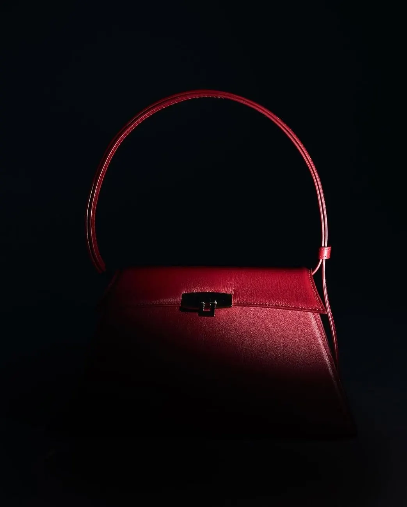
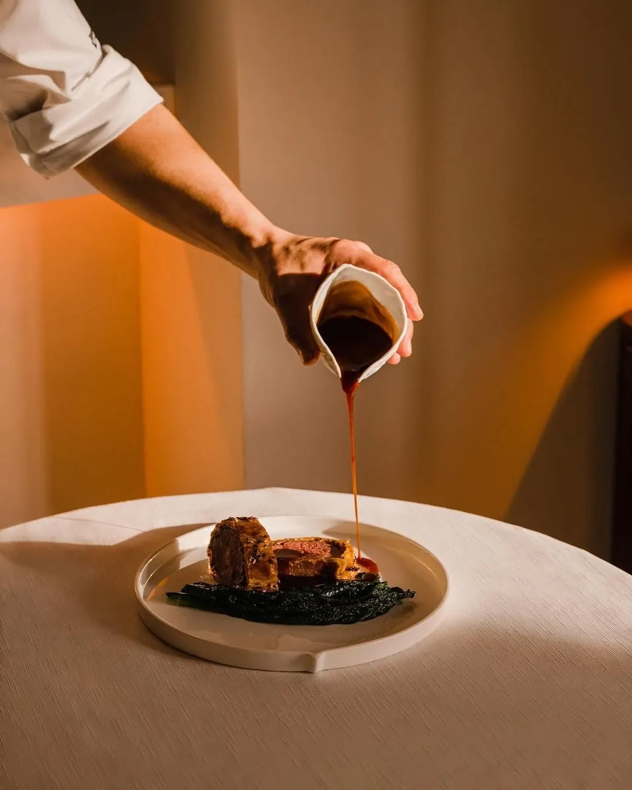
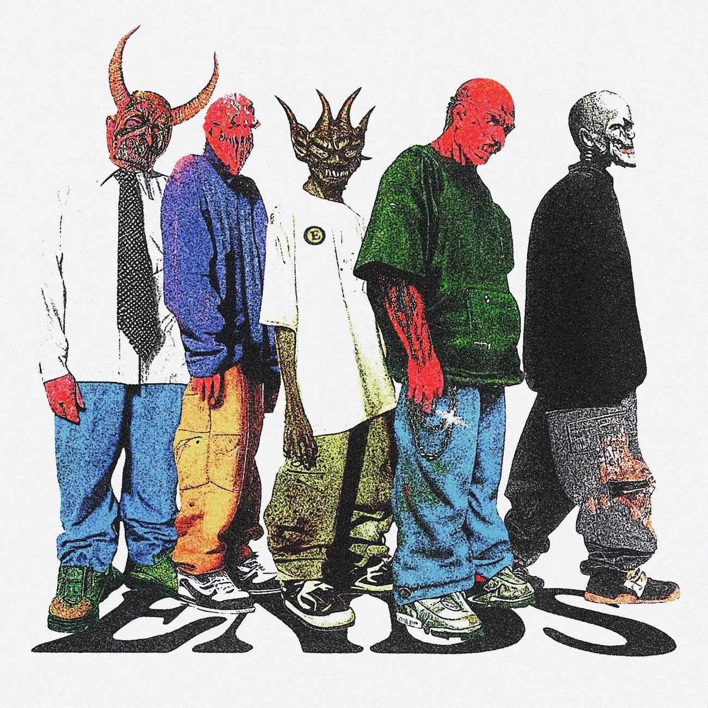
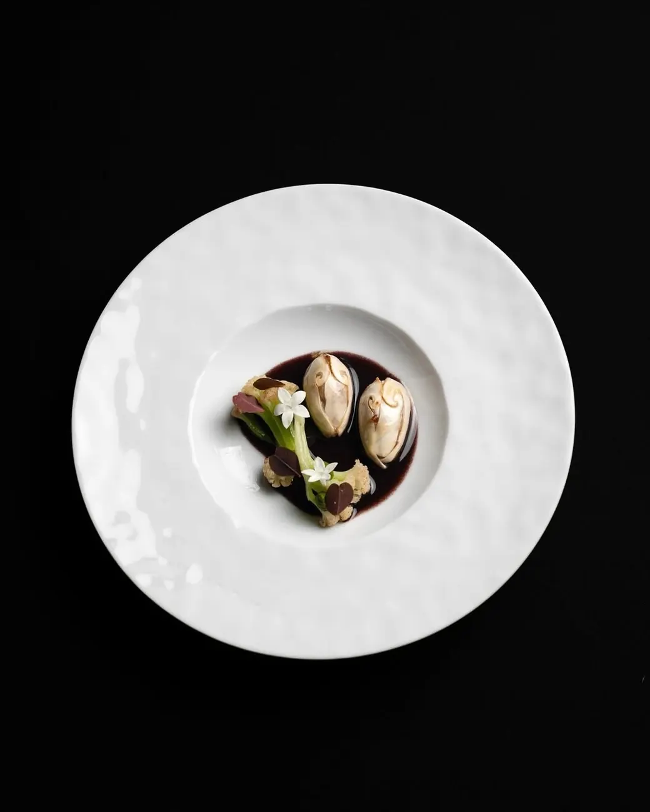

Muestras
Cuatro páginas de una sola pantalla, cada una llevada a un oficio que no era el suyo, para ver hasta dónde aguanta el lenguaje antes de romperse. Y una quinta que no es una página de marca sino la operación de detrás: lo que se publica y lo que contesta.

Atelier Norte
Marroquinería suiza: la tipografía se sale del lienzo y el mosaico se arma solo.
Monocromo + un azul · el bolso aparece donde pone el cursor
Rescoldo
La carta es una rueda: gira con el scroll y cada plato abre su ficha al llegar al frente.
El fuego del fondo cambia de temperatura con cada plato
Tendido
Un tendido de imágenes que se arma solo y seis ilustraciones, cada una con su halo de color.
Todo degradé · la foto aparece donde pone el cursor
Casa Tepemete
Destilería de mezcal. El degradé del horno y rosetas de agave que crecen solas.
Cada visita ve una planta distinta
Turno
La parrilla de publicaciones de un restaurante y los bots que atienden lo que esa parrilla genera.
Los bots funcionan: lo que toques decide la conversación